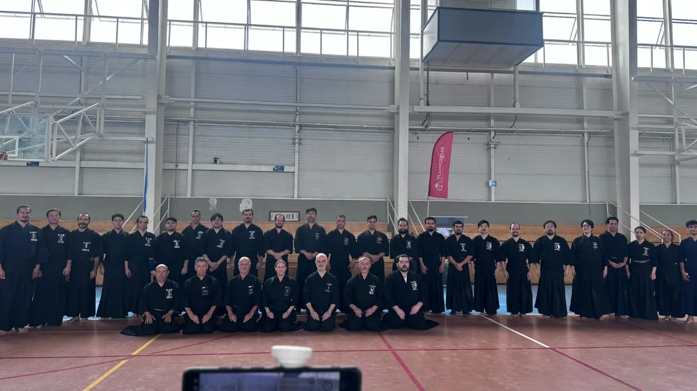
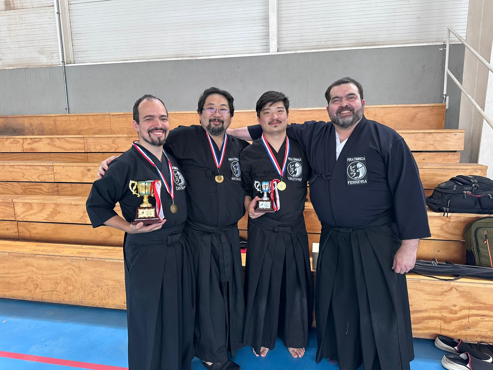

Notícias
Seminário de Iaido e Torneio internacional de Koryu - Rancagua, Chile

Foto com todos os participantes do seminário internacional de Iaido em Rancagua, Chile.
18/03/2026
Nos dias 13, 14 e 15 de março, em Rancagua, Chile, ocorreu o Seminário Internacional de Iaido e o Tornei de Koryu, com apoio da Fechken (Federação Chilena de Kendo) e Ministério dos Esportes do Chile. O Seminário foi ministrado pelos Sensei:
Andy Watson Sensei, Kyoshi 7° Dan Iaido, Kyoshi 7° Dan Jodo.
Harry Jones Sensei, Kyoshi 7° Dan Iaido, Kyoshi 7° Dan Jodo.
Para o Torneio de Koryu foi adotado o estilo Enbu Tokyo, 45° em relação à banca de juízes. Já a Final das Finais é entre todos os campeões de todas as categorias. O torneio contou com a participação de competidores do Brasil e outros países.
Confira abaixo os resultados do Tornei de Koryu em Rancagua, Chile:
🥇 Campeões Individuais:
1º Dan: Yuddy Matunaga
2º Dan: Bruno Castilho
3º Dan: Caio Yokoyama
🏆 Final das Finais:
1º Lugar: Bruno Castilho
2º Lugar: Caio Yokoyama

Participantes brasileiros do torneio de Koryu em Rancagua, Chile.
A Genbukan Brasil parabeniza todos os Kenshi que participaram do Seminário de Iaido e do Torneio internacional de Koryu.